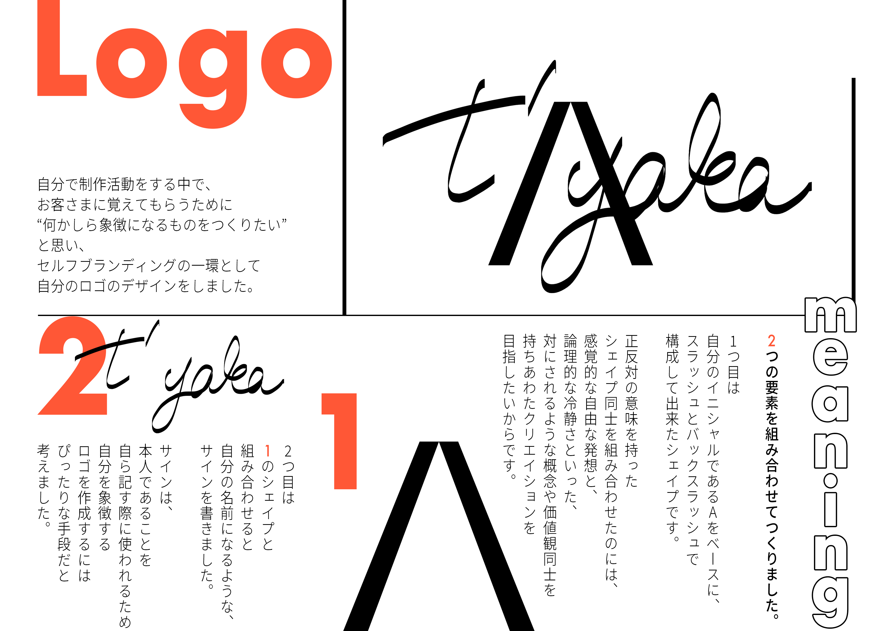

Philosophy
Mind
デジタルをただの選択肢と捉えて、
時空を行ったり来たりする
Typography
欧文フォントFutura
和文フォント中ゴシックBBB
intention
Typographyを学んだ初期の頃に、Futuraが空港でも使用されている理由を知り、その頃からずっとこのフォントに対して思い入れがありました。
セルフブランディングをする際には是非、Futuraをメインフォントとして起用したいと考えており、今回、使用させていただく運びとなりました。
相方となる和文フォントはいくつか候補を挙げたのち、欧文フォントと組み合わて実験しました。
その結果、Futuraの世界観と最も親和性が高いと判断した中ゴシックBBBを使用しております。
Style Guide *only this site
Header level1
Header level2
Header level3
Header level4
subtitle
Notes
45px
32px
28px
22px
18px
14px
Logo
intention

上記のグラフィックはロゴの構成要素を分解して説明したものです。
解説にある通り、このロゴは2つの要素を組み合わせて作っており、私の名前に由来しています。
要素の1つ目は、自分のイニシャルであるAをベースに、スラッシュとバックスラッシュで構成して出来たシェイプです。
2つ目は、先ほどのシェイプと組み合わせると、自身の名前となるようにサインをしたものです。
それぞれの意図などはグラフィック内で説明してありますので、よろしければご覧ください。
Changes
2018.09作成
2019.09作成
1番最初は、上記グラフィック(左)のスラッシュとバックスラッシュの組み合わせのシェイプ、単体でロゴとしていました。
その中で、2019年6月中頃「"あのアディダスの3本ラインのロゴ"をEU裁が商標権を認めない」というニュースが物議を醸しました。
このニュースは、"アディダスの3本線は普遍だ"と思っていた自分にとっては、
かなり衝撃的な出来事であり、自分のロゴの特徴から考えても、再考を余儀なくされました。
そこで、"自分自身を証明する圧倒的な手段はサインなのではないか？"と考え、初期のものと組み合わせたシェイプを最終的なロゴの形と致しました。
Color
Primary
#ff5736Pーlight
#ff8a62Secondary
#367dffintention
このPortfolio siteを運用するにあたって、Primary colorとSecondary colorを選定いたしました。
Primary colorにはもともと自分自身がイメージカラーとして使用していたオレンジを、Secondary colorにはオレンジの補色であるブルーを選定致しました。
女性的な色味と男性的な色味を組み合わせることによって、
ロゴに込めた二律背反の想いや、自分の目指している境界線のない世界を体現したいと思っています。